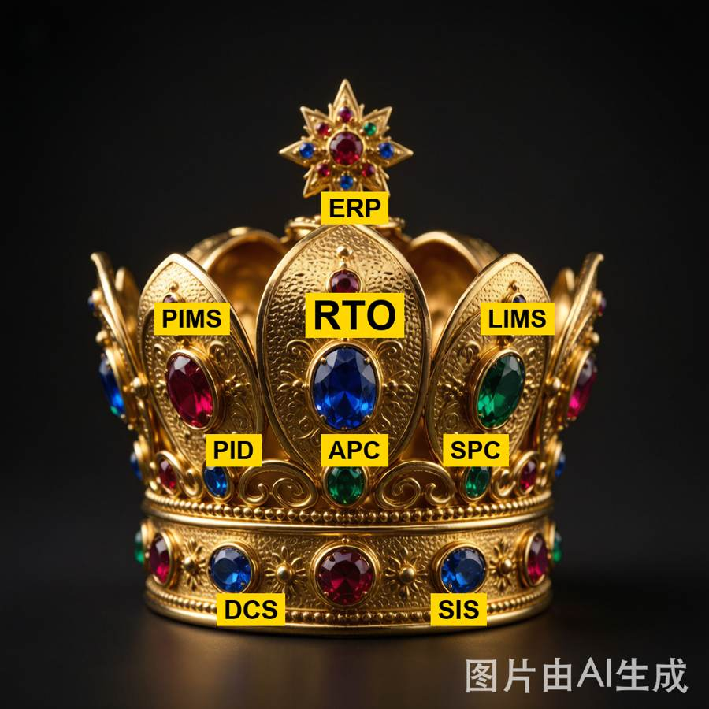

Q1为何说 RTO 是工业人工智能王冠中心的明珠？
在“工业 AI”的诸多技术里（视觉质检、预测性维护、设备健康管理、智能排产、数字孪生……），RTO 被称“明珠”，是因为它处在 物理工艺 × 经济目标 的唯一交汇点：

图 1 · 工业自动化层级“王冠”：中央大蓝宝石为 RTO（王冠中心的明珠），上有 ERP，其下 PID/APC/SPC，两侧 PIMS/LIMS，底部 DCS/SIS——RTO 居于整座“王冠”的中心宝石位。
- 价值最直接：它优化的就是利润、收率、能耗这些“真金白银”的 KPI，是闭环里唯一直接创造经济增量的决策层（典型单套装置年效益数百万至数千万元）。
- 耦合最紧：它把第一性原理模型、实时数据、优化算法、控制执行串成一条闭环，是 AI 与真实物理装置结合最深的环节。
- 最难、最贵：既要深工艺知识，又要强优化能力，还要扛住现场噪声与模型失配——能做好的门槛最高，所以“明珠”贵在难。
- 承上启下：上接经营计划（把排产目标落地为可执行设定值），下启先进控制（把最优设定值交给 MPC），是智能工厂“决策—控制”链路的枢纽。
Q2为何 RTO 是基于稳态模型的优化？
图 2 · RTO 稳态优化闭环：经营计划/ERP 提供经济目标，与机理模型结合形成 NLP，由求解器引擎（核心）算出最优设定值，经 APC/MPC 控制层驱动装置达到新稳态，测量回流经数据调和与稳态检测进入下一轮。
- 装置在 APC/MPC 下绝大多数时间运行在准稳态，优化本质就是“选一个稳态工作点（各回路设定值）使利润最大”——这是个稳态决策问题。
- 动态过渡交给控制层：怎么从旧工作点走到新工作点，由 MPC/调节回路负责；RTO 不必建模动态，模型因此大幅简化、可反复在分钟级求解。
- 稳态模型数值更稳、收敛更可靠、对坏数据更鲁棒。动态 RTO（GDOT，基于梯度的动态实时优化）正在兴起，但经典且主流范式仍是稳态。
Q3为何说“非机理不 RTO”？
一句话：RTO 要在“没有数据的地方”做决策，只有机理模型敢去、也能去那里。
五条硬理由
- RTO 天生要“卡边”，而边界上没有数据。RTO 的价值来自把装置逼到约束边界（最高负荷、最接近产品指标、最省能耗的临界点）。可历史数据几乎都聚在“常规操作点”那团云里——真正赚钱的边界区间，恰恰是数据最稀甚至空白的地方。数据驱动模型在训练域外就是瞎猜，你却偏要它在训练域外给最优解，逻辑上就不成立。机理模型基于守恒定律与热力学，域内域外遵守同一套物理，能可靠外推到边界。
- 机理能“外推”，数据模型只能“内插”。机理模型（质量/能量/动量守恒 + 相平衡/反应动力学）是因果结构，换工况、换原料、推到边界方程照样成立；数据模型本质是对历史样本的拟合（内插），一旦离开样本包络就失真，甚至给出违背物理（负浓度、破坏守恒）的“最优解”，把装置带向危险或不可行点。
- 优化器会“钻模型的空子”。求解器的天职是找极值——模型哪里有虚假甜点，它就往哪钻。纯数据模型在外推区的虚高预测，会被优化器当真金白银去追，产出看着利润爆表、物理上根本达不到的设定值。机理模型的物理约束天然堵死这些“假极值”。
- 可解释、可信、可审查——安全合规底线。RTO 输出直接下发控制层去动真实装置，工程师必须能审阅“为什么是这个设定值”。机理模型每个方程都有物理含义、可被工艺人员验证背书；黑箱模型的边界解无法解释，没人敢让它闭环下发到高温高压装置。
- 数据效率与冷启动。新装置、改造后、新牌号切换时往往没有足够历史数据。机理模型靠第一性原理即可搭起、少量数据标定就能用；纯数据模型此时无米下锅。
澄清：不是“排斥数据”，而是“机理为骨、数据为肉”。主流范式恰是机理内核 + 数据修正：数据调和/参数估计用现场数据在线校准关键参数；Modifier Adaptation / ROPA 用工厂实测的梯度/偏差修正量贴合真实装置，但被修正的主体仍是机理模型。去掉数据，模型有偏差；去掉机理，模型直接失去外推资格，RTO 无从谈起。
Q4当前国内外 RTO 系统投运实施的现状与主要困难？
国际：商业软件成熟，但内核仍由欧美主导
欧美在 RTO 上起步早、生态完整，主流商业平台已形成“流程模拟内核 + 优化求解器 + APC 闭环”的一体化方案：
- AspenTech Aspen Plus / HYSYS 流程模拟 + GDOT（动态 RTO）+ DMC3 先进控制，是炼化/乙烯/芳烃 RTO 的事实标准。
- AVEVA APO（原 ROMEO），以严格机理模型 + 数据协调见长。
- Honeywell Profit Optimizer，与 Uniformance/PHD 实时数据库、Experion 控制深度集成。
- 此外 Siemens、Petro-SIM（KBC/横河）等也提供 RTO/计划优化方案。
国际近年应用新动向（2022 起）：从单装置到全厂闭环、延伸到能效与碳
近几年的国际部署呈现三个明显趋势——由开环走向闭环、由单装置走向全厂级、由“利润”走向“利润 + 能效 + 碳”。代表性案例：
| 企业 / 装置 | 软件 / 方案 | 应用要点 | 成效 / 意义 |
|---|
| 沙特阿美 Yanbu 炼厂（中东） | AVEVA APO | 全厂级闭环 RTO，2022-05 投运，仅 7 个月建成；按实时油价 / 产品价格 / 约束生成全厂最优操作目标 | 中东首套全厂闭环 RTO；投资回收期 3–6 个月 |
| Repsol Coruña 炼厂（西班牙） | AVEVA RTO | 优化蒸汽 / 氢气 / 燃料气 / 发电与电网购售电，并将 CO₂ 定价纳入实时优化 | RTO 由“利润”扩展到“能效 + 公用工程 + 碳”，适配植物油 / 原油等多原料 |
| Petrobras REVAP 炼厂（巴西） | AspenTech Aspen Plus Optimizer（EO-RTO） | 基于联立方程(EO)的复杂 RTO，日均 9 次优化运行，先开环验证后转闭环 | 重油加工能力提升、潜在效益约 $13K/天；EO-RTO 经典范例 |
注：上述为厂商 / 会议公开披露的国际案例，说明 RTO 在欧美之外（中东、南美、欧洲）的大型能源企业中也已规模落地，且正从“单装置稳态开环”迈向“全厂级闭环 + 能效 / 碳协同”。
国内：加速追赶，标杆装置已跑通，但整体渗透率仍低
国内 RTO 研究与应用在“十三五—十四五”明显提速，中控技术、石化盈科、华为等已布局，并在一批标杆装置上取得实效：
| 单位 / 装置 | 应用要点 | 成效 |
|---|
| 扬子石化 3# 常减压 | RTO 投运，模型预测精度高 | 年增效约 1800 万元，模型精度 97% |
| 独山子石化 110 万吨/年乙烯 | 乙烯 RTO，双烯收率优化 | 双烯收率 +0.85%，年增效约 5400 万元 |
| 九江石化 芳烃 | 芳烃 RTO | 收率误差 <1% |
| 金陵石化（AIPC/APC） | 先进控制 + 实时优化 | 自控率 99%，波动方差 −70% |
| 天津石化 连续重整 | 连续重整 RTO | 国内首创 |
| 茂名石化 1# 裂解 | 裂解装置 RTO | 增效 500 万+ |
| 镇海炼化 乙烯 / 扬子 2# 连续重整 | RTO 推广 | 持续投运 |
注：上述为公开报道中的代表性案例，用于说明国内已从“0 到 1”走向“标杆验证”，并非全行业普及水平。
国内厂商格局
- 中控技术 APC/RTO、AiPlant 平台、UCS 通用控制系统、TPT 时间序列工业大模型。
- 石化盈科 ProMACE 工业互联网 + PROCET-AIPC 石化大模型 / 工艺优化。
- 华为 盘古大模型，与石化企业合作探索工艺优化与软测量。
- 和利时 等也在 APC/优化方向布局。
主要困难（投运实施的六道坎）
- 模型失配：真实非线性、结垢、催化剂老化、设备改造未被模型捕获。
- 数据质量与可得性：测点缺失/不准、实验室分析延迟、噪声大，需数据调和与显著误差检测。
- 配置复杂：海量位号、单位换算、仪表缺口、模型标定。
- 计算负担与求解鲁棒性：大模型在坏数据下求解不稳（见 Q5/Q6）。
- 组织与变革：工艺/控制/IT/操作多部门协同，以及对闭环优化的信任与接受。
- 持续维护：模型随原料/设备漂移，需持续再验证；很多项目“能跑但不出效益”，缺持续调优。
现状小结：国际主导高端（尤其求解器与流程模拟内核），且近年已出现全厂级闭环 RTO、并延伸到能效与碳协同优化；国内在 APC+RTO 集成、行业 know-how、大模型赋能上快速追赶，少数标杆装置已跑通；但整体渗透率仍低，稳态 RTO 为主、动态 RTO 极少，求解器/物性内核仍是短板。
Q5为何说高性能求解器是 RTO 的核心引擎？
- RTO = 机理模型 + 经济目标 → 大规模 NLP（非线性规划）。求解器就是把这套“模型 + 目标”翻译成“可行且最优的设定值”的引擎。
- 它必须同时做到：鲁棒（坏数据/病态也不崩）、快（分钟级内反复求解）、规模大（万级变量/方程，如 12 万变量乙烯 RTO）、准（找到真优而非不可行）。
- 模型再好，求解器不行 = 垃圾设定值 = 零价值；好的求解器甚至能“救活”一个不太准的模型。
- 非线性热力学（闪蒸、VLE、NRTL/UNIQUAC、反应动力学）让 NLP 又硬又非凸，是真正的难点所在——这也是为什么“引擎”强弱直接决定 RTO 能否落地。
Q6RTO 优化求解器面临的主要技术挑战？
- 非凸：易陷局部最优，存在多个盆地。
- 数值病态：变量量纲跨度大（流量 vs 组成 vs 温度）、刚性热力学，条件数差。
- 对坏数据 / 粗差的鲁棒性：测量误差、显著误差要能识别处理，否则解飘。
- 规模：全厂 RTO 可达 10⁴–10⁵ 变量，必须利用稀疏结构。
- 实时性：必须在周期内（如 5–15 分钟）稳定求解。
- 与 Modifier Adaptation / ROPA 耦合（带工厂反馈修正的迭代寻优）。
- 含离散决策（MINLP，拓扑/操作模式切换）更难；冷启动/热启动、不可行性诊断。
Q7人工智能时代 RTO 的新机遇可能会是？
- 混合 / 学习模型：用 NN/GP 做机理模型的代理或修正（更快更准），物理信息 ML 保物理一致。
- 自动化建模与维护：LLM 辅助建模、代码生成、文档、异常诊断，自动检测模型漂移。
- 动态 RTO（GDOT）/ 强化学习：在动态过程上做连续优化。
- 数字孪生闭环：高保真 DT + RTO，做场景推演与 what-if。
- 软测量 / 推断性质：ML 推断关键性质，减少化验延迟，直接喂给 RTO。
- 自整定 RTO：ML 修正量（modifier）自适应。
- 边缘 / 云部署、跨装置联邦学习、自主优化智能体（agentic RTO）。
Q8为何说 RTO 是国产工业软件发展的重大机遇？
- 市场巨大且刚需：中国是全球最大的过程工业国之一（炼油、乙烯、芳烃、煤化工产能居世界前列），装置基数大、优化意愿强，RTO 单套价值高（千万级年效益），潜在市场庞大。
- 自主可控紧迫：工业软件（尤其流程模拟、优化求解器）长期被 AspenTech / Honeywell / AVEVA 垄断，存在“卡脖子”风险；政策强力推动工业软件自主可控、新型工业化、智能制造。
- 差异化突破口：RTO 是工业软件“皇冠上的明珠”，高度依赖行业工艺 know-how——而这正是国内工程公司、设计院、生产企业多年积累的优势点。结合国产求解器 + 机理模型 + 工业 AI（大模型/软测量），可形成自主 RTO，不必在通用流程模拟上正面硬刚。
- 数据与场景优势：国内装置多、数据量大、工艺包丰富，利于数据驱动修正与快速迭代；数据主权诉求也推动本地化部署。
- 生态已现雏形：中控、石化盈科、华为等已布局，国家实验室/重大专项持续支持。
风险提示：求解器内核、非线性热力学物性、长期可靠性验证仍是国产短板，需要持续投入与标杆装置的“长跑”验证。RTO 既是机遇，也是国产工业软件最硬的“试金石”。
Q9为何说 RTO 就是终极杀招“岱宗如何”？
“岱宗如何”是金庸《笑傲江湖》里泰山派的剑招名（取自杜甫《望岳》首句“岱宗夫如何？齐鲁青未了”），也是泰山派剑法中最高深的绝艺。小说写它出招时的情形——
玉音子在三十余年前，曾听师父说过这一招“岱宗如何”的要旨，这一招可算得是泰山派剑法中最高深的绝艺，要旨不在右手剑招，而在左手的算数。左手不住屈指计算，算的是敌人所处方位、武功门派、身形长短、兵刃大小，以及日光所照高低等等，计算极为繁复，一经算准，挺剑击出，无不中的。
这招的命门全在一个“算”字：不靠蛮力、不靠剑快，而是把敌我方位、兵刃、光照等要素尽数心算入内，算出那一下必中的落点，再一击致命。昔年泰山派祖师更断言——
这一招“岱宗如何”，可说是我泰山剑法之宗，击无不中，杀人不用第二招。
书中借旁白评它“与独孤九剑不相上下”，区别在于两条路子：独孤九剑靠遍观天下武功、临场凭经验习惯料敌；而岱宗如何靠的是公式，逻辑，精密的计算，“想要修炼‘岱宗如何’则是必须要有强大的计算、心算能力，否则，你计算的速度跟不上人家出剑的速度，结果只有一死”。
把这套“武学”平移到工业优化，RTO 与“岱宗如何”几乎一一对应：
- 以算取胜 = 以算定乾坤。RTO 同样不靠堆硬件、不靠老师傅经验，而是用机理模型 + 经济目标 + 高性能求解器，在分钟级把全装置的最优工作点（设定值）精确算出来。它的胜负手也是“算”——算得准、算得稳，这一招就成。
- 剑法之宗、杀人不用第二招 = 压箱底绝杀。在优化“江湖”里，视觉质检、预测维护、智能排产、数字孪生多是“强身健体 / 少输”（降本、防错、辅助）；唯 RTO 是直接多赢——把真金白银从装置里“逼”出来。它是那招不出则已、出则定胜负的绝杀。
- “算准”的前提 = 非机理不 RTO（Q3）。这招“算的是敌人所处方位、身形长短、兵刃大小”，全是真实的物理要素。RTO 的“算”也必须基于第一性原理——用错“地图”（纯数据模型）算出的落点，在约束边界外全是虚的。
- “计算速度跟不上就死” = 求解器是核心引擎（Q5）。心算再妙，临场算不动也白搭。RTO 的求解器就是那双“左手”，必须在周期内把万级变量、非凸、数值病态的 NLP 解稳、解准。
- 招式的软肋 = RTO 的真实痛点（Q4/Q6）。小说里这一招有个致命弱点：算的时候剑客是“定”住的，全神贯注在心里演算，一旦被打断、或对手不按预设走，就落空。更有名的一笔是——岳灵珊只不过摆个“岱宗如何”的架子，其实并非真的会算，否则的话，她一招即已取胜，又何必再使“五大夫剑”“来鹤清泉”“石关回马”“快活三”等等招术？ 这恰似 RTO 的两种“假绝杀”：数据不干净、稳态未达、模型失配时硬算（被打断），或模型不实、求解器崩溃（摆架子非真算）——结果都是“这一招”走样甚至反噬。
所以“岱宗如何”之绝，在于不以蛮力、以精密计算换必杀；RTO 之绝，亦在于不以蛮力、以精密计算逼出最优设定值。两者都是各自江湖里那招“算得准才杀得中”的压箱底绝杀——而“算得准”的前提，正是机理为骨、求解器为刃、数据干净不被扰。招式名虽取自“岱宗夫如何？齐鲁青未了”，其真意却在“会当凌绝顶，一览众山小”：群山（降本防错之招）皆在其脚下，唯它直接把利润从装置里“逼”出来。